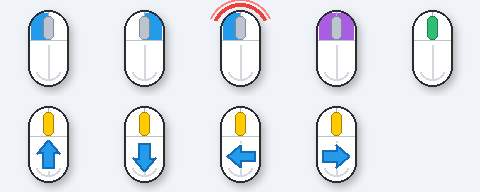

명령 모드
Ctrl + Alt + A를 누르면 명령 모드가 열립니다. 명령 모드가 열린 상태에서 한 글자 키를 누르면 해당 기능이 실행됩니다. Esc를 누르면 아무 작업 없이 닫힙니다.
명령 모드 도움창은 속성의 명령 모드 > 명령 모드 도움창 표시에서 켜거나 끌 수 있습니다.
| 그룹 | 키 | 동작 |
|---|---|---|
| 시스템 | O | 오버레이 표시 전환 |
| 시스템 | E | 클릭 효과 임시 표시/숨김 |
| 시스템 | Space | 전체 일시중지/재개 |
| 그리기 | D | 그리기 모드 켜기/끄기 |
| 그리기 | P | 입력 통과 모드 |
| 그리기 | C | 그리기 전체 지우기 |
| 그리기 | Z / Y | 실행 취소 / 다시 실행 |
| 캡처 | R | 영역 캡처 |
| 캡처 | L | 마지막 영역 다시 캡처 |
| 캡처 | M | 현재 모니터 캡처 |
| 캡처 | V | 전체 가상 화면 캡처 |
| 캡처 | W | 활성 창 캡처 |
| 창 | K | 영역 선택 후 고정 화면 열기 |
| 창 | B | 마지막 캡처 고정 |
| 창 | G | 실시간 영역 선택 |
| 창 | X | 실시간 화면 모두 닫기 |
| 창 | F | 전체 화면 확대 |
| 설정 | S | 설정창 열기 |
마우스 클릭 표시
마우스를 클릭하면 포인터 오른쪽 아래 근처에 클릭 종류를 나타내는 이미지가 표시됩니다. 왼쪽, 오른쪽, 양쪽 동시 클릭, 휠 클릭, 휠 드래그, 더블클릭을 각각 켜거나 끌 수 있습니다.

그리기 도구
그리기 모드에서는 아래 프로그램에 마우스 입력이 전달되지 않고, 화면 위에 주석을 그립니다. 도구 모음은 드래그해서 옮길 수 있고 위치가 저장됩니다.
| 도구 | 설명 |
|---|---|
| 펜 | 자유롭게 선을 그립니다. |
| 형광펜 | 반투명 굵은 선으로 강조합니다. |
| 직선 / 화살표 / 사각형 / 원 | 드래그한 시작점과 끝점을 기준으로 도형을 그립니다. |
| 도장 | 별, 하트 같은 강조 표시를 찍습니다. 별은 손으로 그린 듯한 느낌으로 표시됩니다. |
| 지우개 | 개체 지우개 또는 픽셀 지우개 방식으로 그린 내용을 지웁니다. |
색상, 굵기, 선 모양은 도구 모음의 아이콘 버튼을 눌러 선택합니다. 마우스를 올리면 도움말이 표시됩니다.
고정 화면
명령 모드에서 K를 누르고 영역을 드래그하면 해당 영역이 테두리 없는 별도 창으로 열립니다.
| 조작 | 동작 |
|---|---|
| 마우스 휠 | 확대/축소 |
| 드래그 | 창 이동 |
| 우클릭 | 확대, 축소, 원래 크기, 주석 모드, 입력 통과, 복사, 저장, 닫기 메뉴 |
| Esc | 창 닫기 |
실시간 화면
명령 모드에서 G를 누르고 영역을 드래그하면 선택 영역이 기본 10FPS로 갱신되는 창이 열립니다. 실시간 화면은 worker 기반 캡처와 queue size 1 구조로 오래된 프레임이 쌓이지 않게 처리합니다.
실시간 화면도 휠 확대/축소, 드래그 이동, Esc 닫기, 우클릭 메뉴를 지원합니다.
전체 화면 확대
명령 모드에서 F를 누르면 마우스 위치를 기준으로 화면이 천천히 확대됩니다. 확대 상태에서 마우스를 움직이면 확대 중심이 따라오고, 마우스 휠로 1.0배부터 5.0배까지 추가 확대/축소할 수 있습니다. Esc를 누르면 천천히 축소되며 원래 화면으로 돌아갑니다.